Prise de contact
Le lancement de votre tournoi commence par un simple échange.
Comment démarrer ?
Pour garantir une expérience optimale, nous initialisons votre espace organisateur manuellement. Contactez-nous à l'adresse contact@partida.eus et fournissez-nous :
-
1Le nom du tournoi : Tel qu'il apparaîtra dans l'application.
-
2Le lieu : Il nous faut référencer l'endroit où le tournoi se jouera.
-
3Les organisateurs : Le nom/prénom d'au moins une personne qui s'est déjà connectée à l'application.
Notre approche
"Nous souhaitons que vous restiez autonome. Une fois ces informations fournies, vous gardez le contrôle total sur la configuration, les inscriptions, le calendrier et les résultats. Partida est là pour vous assister, pas pour décider à votre place."
Configuration du tournoi
La première étape consiste à configurer votre tournoi et définir sa structure.
1.1 Spécialités
Une spécialité combine une discipline, un type d'opposition et un lieu de pratique principal.
Surface
Choisissez entre trinquet, mur à gauche, ou fronton place libre.
Discipline
Main nue, pala, xare, etc.
Opposition
Format : Tête-à-tête ou deux contre deux.
Lieu
Lieu où les parties se joueront.
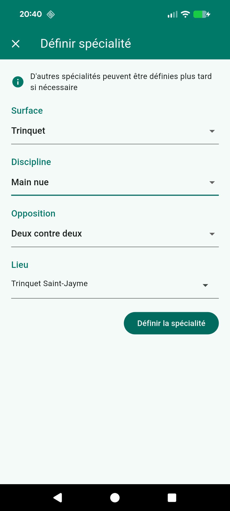
1.2 Séries
Les séries permettent aux joueurs de tous niveaux de s'inscrire.
Public ciblé
Hommes, femmes, mixte, ou enfants. Ceci est donné uniquement à titre indicatif
Score cible
Nombre de points pour gagner une partie pour cette série.
Inscriptions ouvertes
Permet d'ouvrir les inscriptions à tous les utilisateurs de Partida, ou au contraire de garder la main et inscrire soi-même les équipes.
Limitation du nombre de joueurs (optionnel)
Limitez le nombre max d'équipes en fonction de votre capacité d'accueil.
Durée maximum de partie (optionnel)
Définissez si une partie peut se gagner au temps, par exemple au bout de 60 minutes.
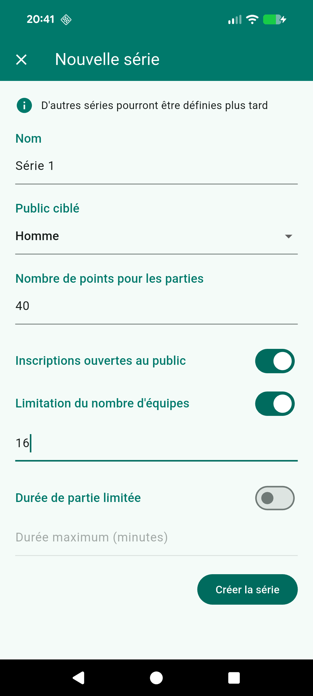
1.3 Créneaux
Définissez les plages horaires sur lesquelles les parties vont se jouer.
Configurez les créneaux de jeu, par exemple les lundis de 18h à 19h. Ces créneaux seront proposés aux joueurs lors de l'inscription pour qu'ils définissent leurs disponibilités, et seront utilisés pour la planification automatique.
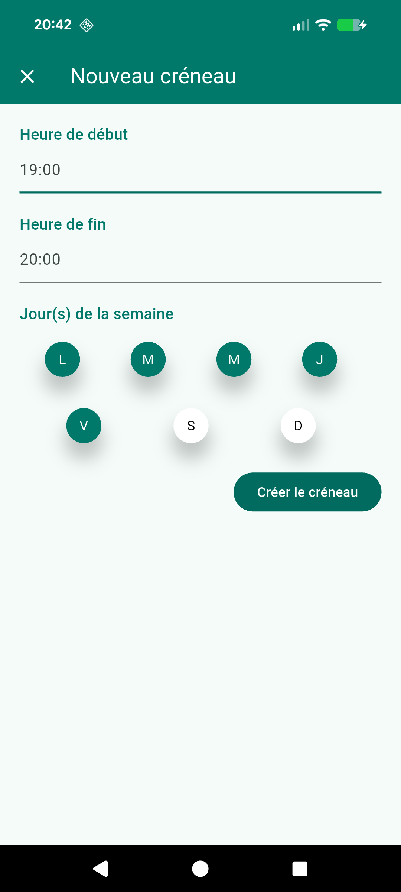
Gestion des inscriptions
Suivez, validez et ajustez les engagements des équipes.
2.1 Liste des inscrits
Visualisez en un coup d'oeil toutes les équipes inscrites dans chaque série. Inscrivez vous-même des équipes. Filtrez selon le statut de l'inscription (acceptée, refusée, en attente de validation).
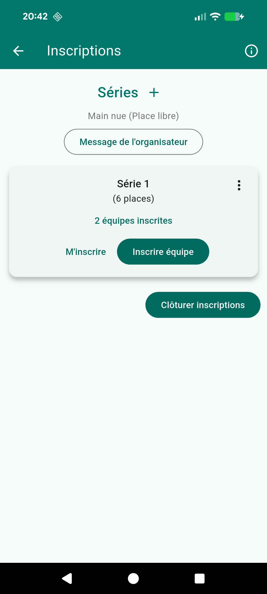
2.2 Validation
Validez ou refusez les équipes, les joueurs recevront une notification immédiate. Vous pourrez changer d'avis à tout moment.
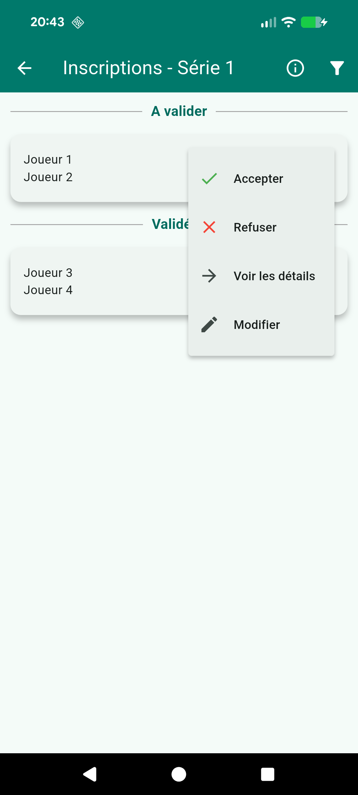
2.3 Edition
Modifiez les inscriptions, par exemple pour modifier les disponibilités ou indisponibilités. Changez une équipe de série.
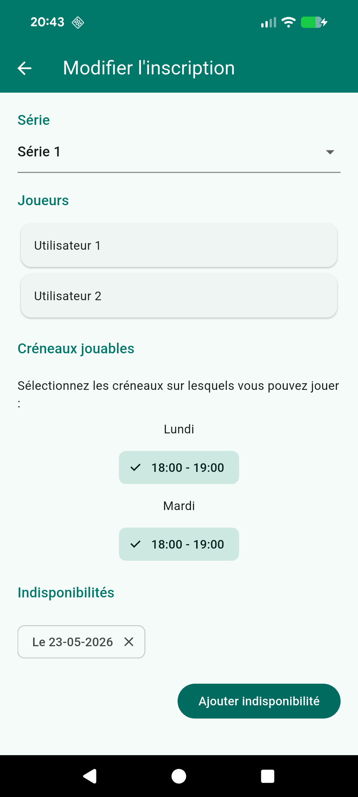
Constitution des Poules
Répartissez vos équipes pour lancer la phase qualificative.
3.1 Structure
En fonction du nombre d'équipes inscrites, définissez comment répartir les équipes en poules. Par exemple pour 18 équipes inscrites, 2 poules de 5 et 2 poules de 4. L'application fait une proposition que vous pouvez modifier.
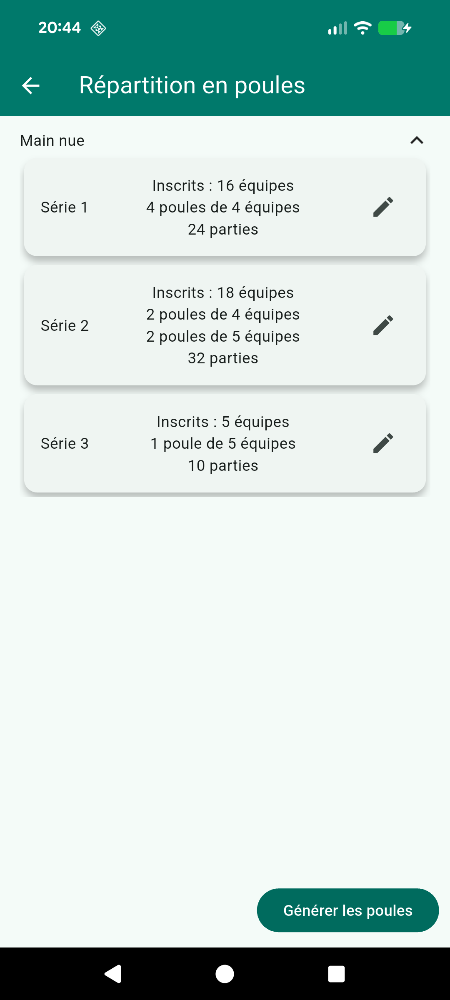
3.2 Répartition
L'app distribue les équipes automatiquement en groupant les équipes ayant des disponibilités en commun. Vous pouvez ensuite échanger deux équipes manuellement si besoin.
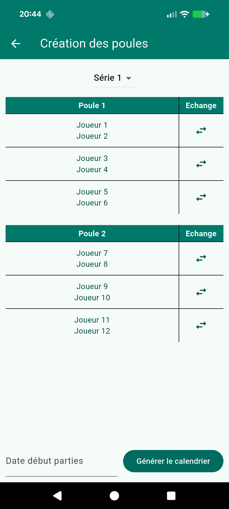
Planification
Générez votre calendrier de rencontres en respectant les contraintes des joueurs.
4.1 Génération automatique
L'algorithme place les parties en respectant les disponibilités et indisponibilités des équipes. Il veille aussi à ce que les parties de chaque équipe soient suffisamment espacées.
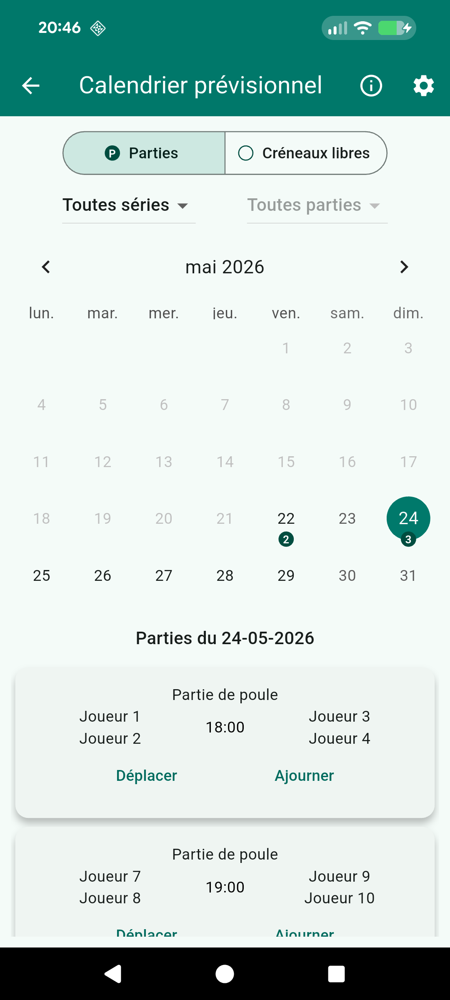
4.2 Retouches manuelles
Déplacez ou échangez les parties à votre guise si la planification automatique ne vous convient pas. Une fois satisfait, publiez le calendrier pour lancer la compétition.
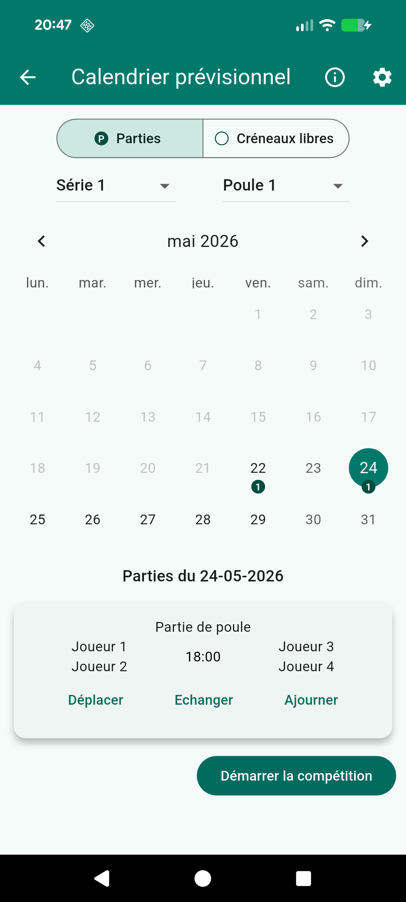
4.3 Gestion au quotidien
Déplacez, échangez ou ajournez des parties. Si le lieu de pratique n'est pas disponible, marquez des créneaux comme indisponibles.
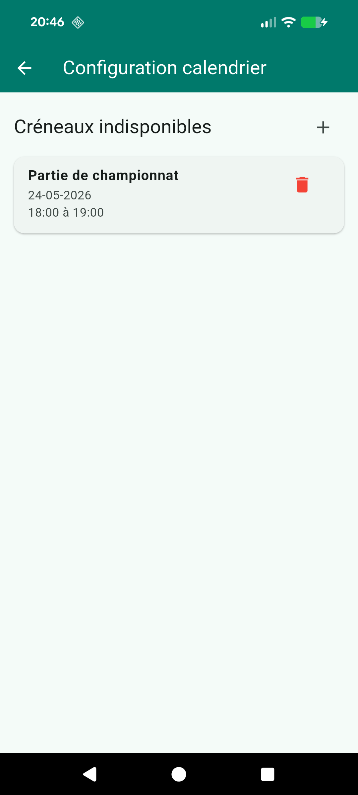
Résultats
Entrez les scores en temps réel, et laissez Partida mettre les classements à jour.
5.1 Saisie des scores
Enregistrez, modifiez ou annulez les résultats des rencontres. Comptez les points pendant la partie grâce à notre compteur. Support du forfait et forfait général.
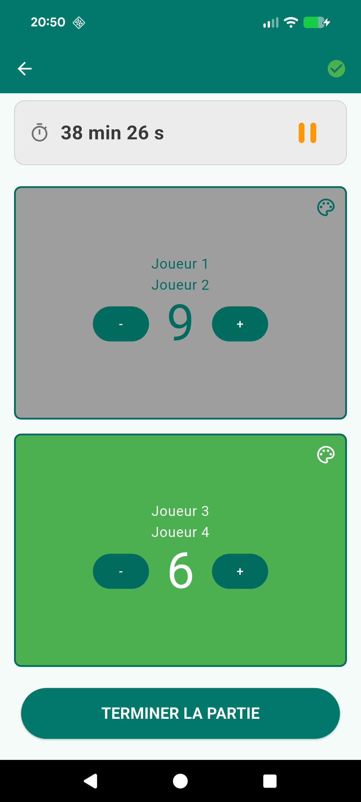
5.2 Classement au sein des poules
Le classement de la poule est recalculé instantanément en fonction du nombre de victoires et du goal-average.
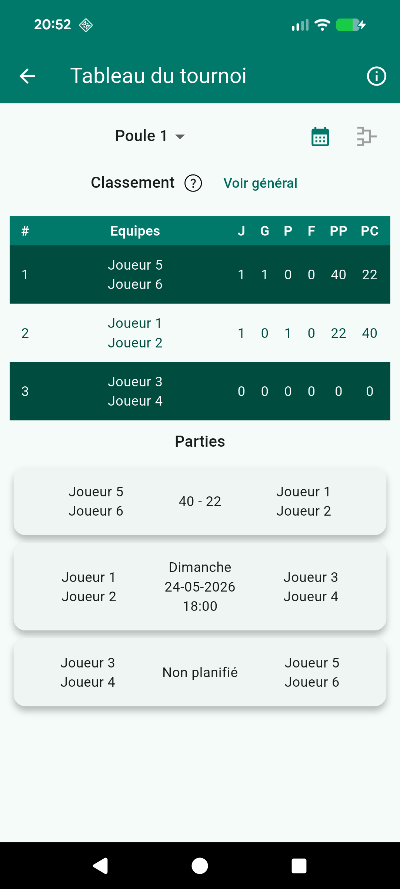
5.3 Classement général
Le classement général de la série est recalculé instantanément (points, goal-average). Il servira de base pour les phases finales.
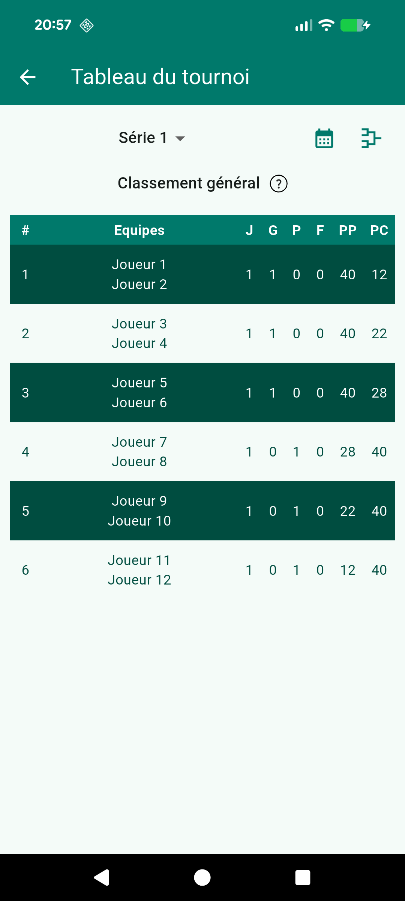
5.4 Gestion des juges
Désignez des juges pour chaque rencontre. Les juges peuvent saisir les scores ou compter les points en direct pendant la partie.
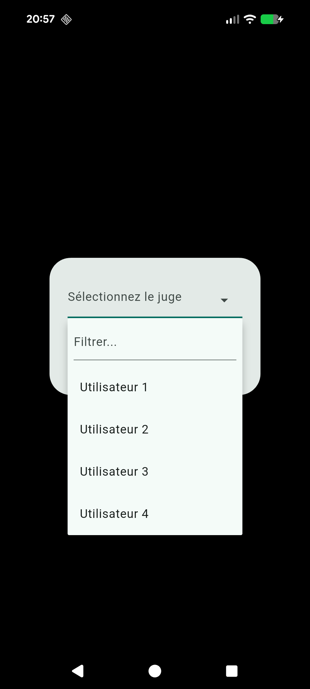
Phases finales
Gérez les tableaux de phases finales.
6.1 Structure
Définissez le nombre d'équipes directement qualifiées, les différents tours de barrage, les différents tableaux (principale, consolante) et la date de la finale.
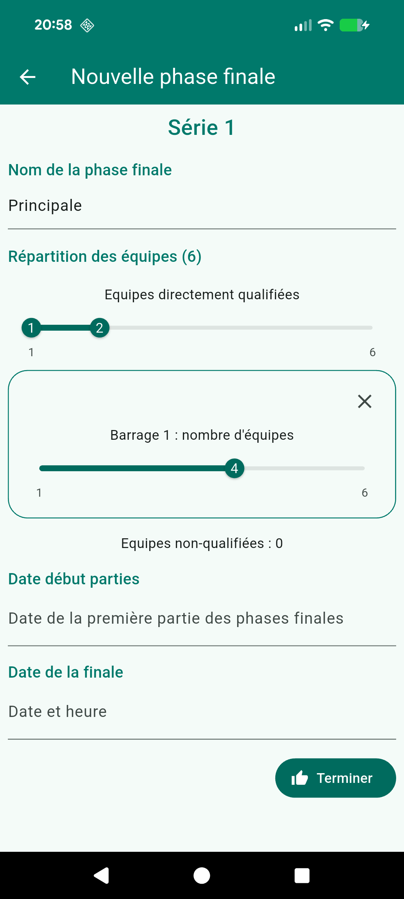
6.2 Planification automatique
Dès que la structure est validée, l'application génère l'ensemble des rencontres du tableau, des barrages jusqu'à la grande finale. En tant qu'organisateur, vous gardez la main pour modifier les date et heures de chaque partie si nécessaire.
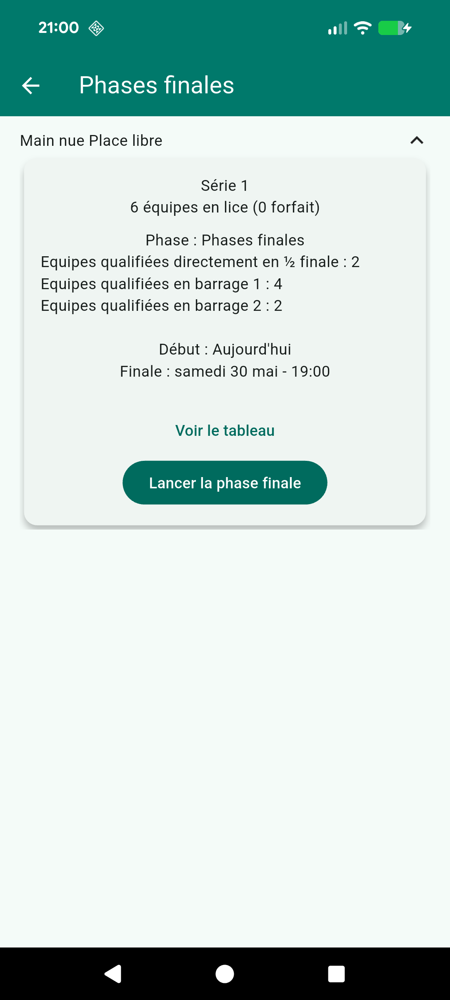
6.3 Progression
Une fois que vous êtes satisfait de la planification, vous pouvez lancer officiellement les phases finales. Celles-ci deviennent alors publiques pour tous les joueurs. À chaque score saisi, les vainqueurs sont automatiquement propulsés au tour suivant dans l'arbre du tournoi.
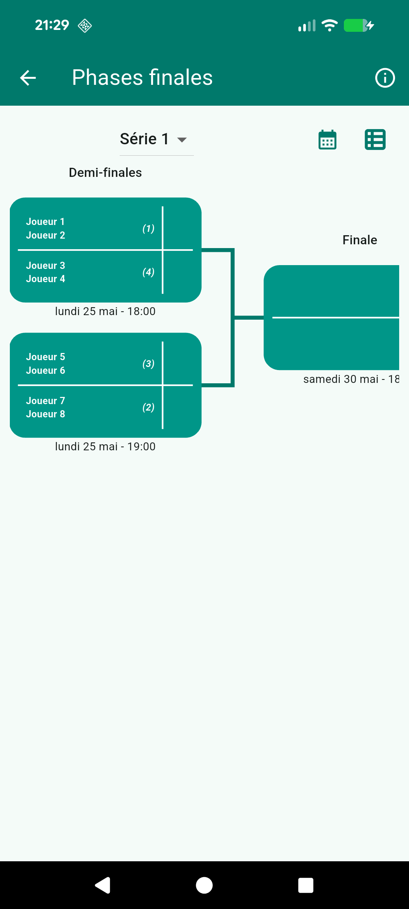
Tableau de bord
Suivez votre tournoi en un coup d'oeil via le tableau de bord dédié.
7.1 Points de vigilance
Suivez les parties non placées, sans score ou sans juge désigné. Visualisez la progression du tournoi et les parties du jour
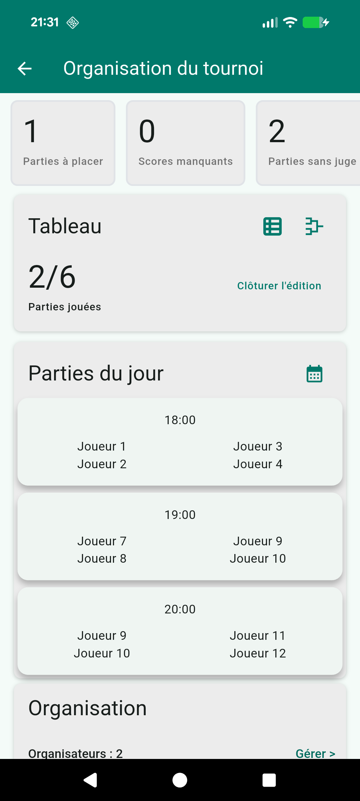
7.2 Organisateurs
Gérez l'équipe d'organisation de votre tournoi. Vous pouvez ajouter autant d'organisateurs que nécessaire ; tous possèdent exactement les mêmes droits d'administration sur le tournoi.
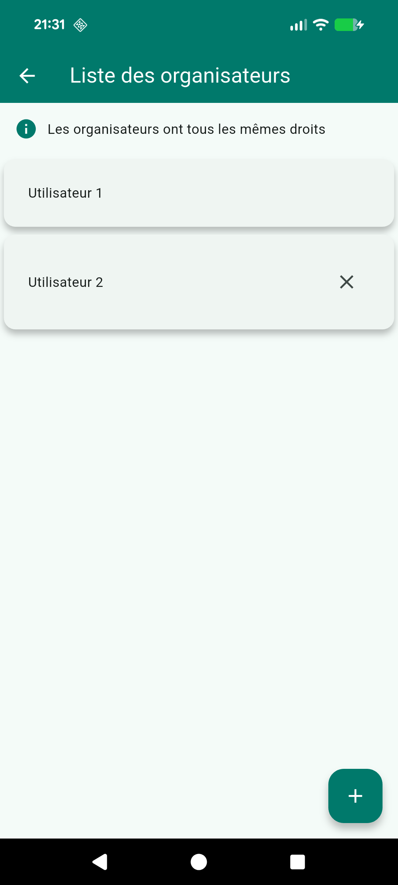